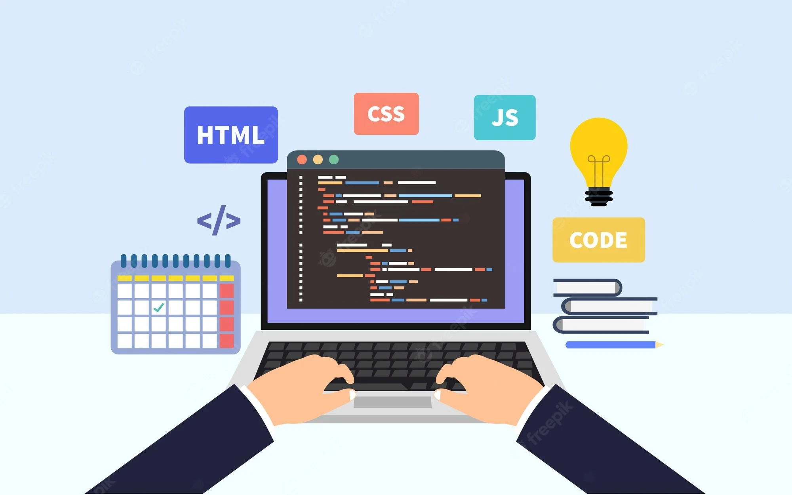

Start Building In-Demand Tech Skills and Land a Software Developer Job
Batches Stars From
Land lucrative offers with an average salary of ₹6.7 Lakhs per year.
Download Curriculum
About the Program
Dive into our Java Full Stack Web Development course at TAP Academy, where you'll master Java programming alongside front-end and back-end frameworks, preparing you for a career in dynamic web development.

Everything You Need To Know About Full Stack Web Development (JAVA)
Learn Java fundamentals alongside HTML, CSS, and JavaScript basics..
Master OOP concepts and the Collections Framework.
Explore advanced Java, Spring, Hibernate, JDBC, and JEE..
Apply your knowledge and skills by working on live projects..